You are here: Gallery
Have a look around
Our playroom, garden, food and art, plus a short tour you can play.
Photos
Choose a group, or see them all. Select a photo to see it larger.
Rooms

Baskets and shelves in the playroom. 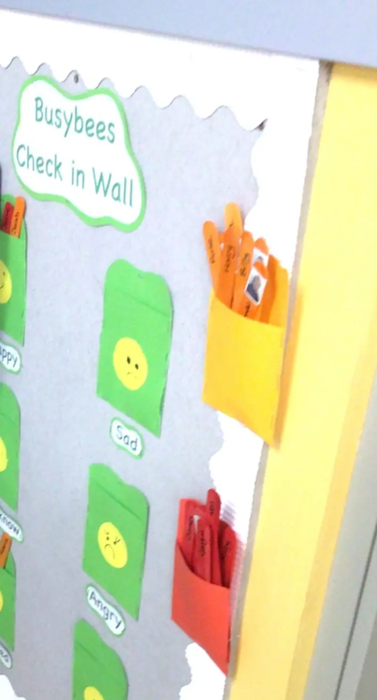
Our feelings check-in wall.

Garden
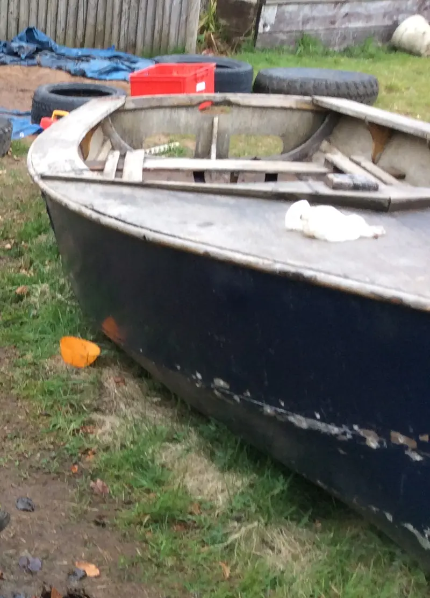
The old boat in the garden. 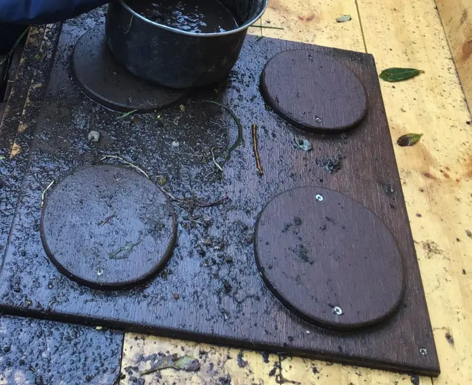
The mud kitchen. 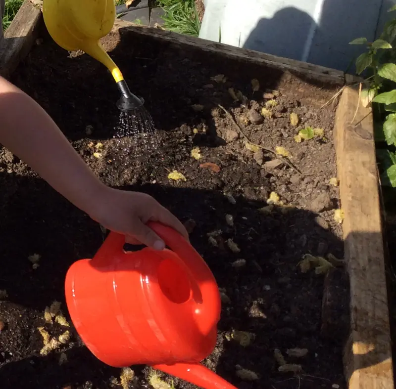
Watering the raised beds. 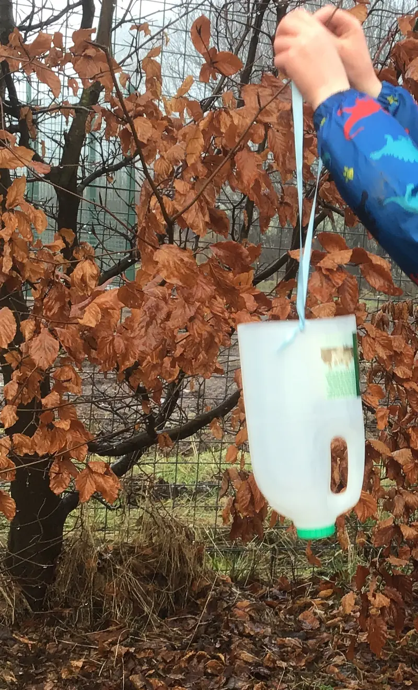
A rainwater catcher the children made. 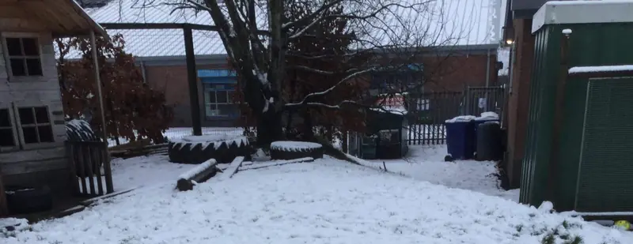
The garden after snow.


Play
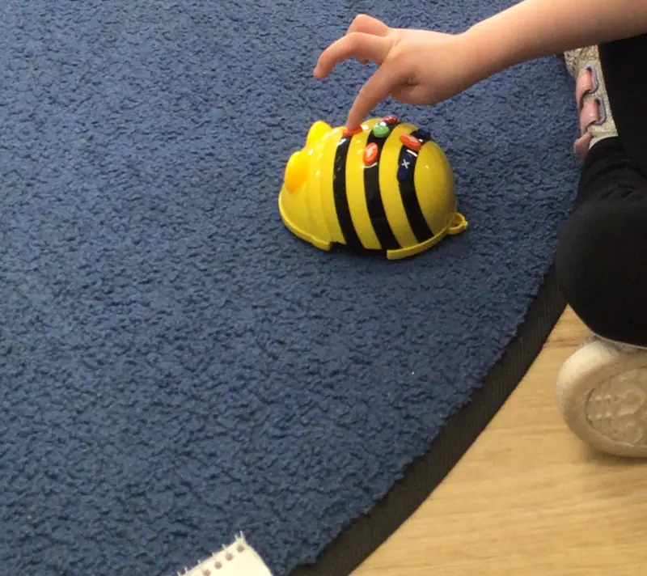
Programming the Bee-Bot. 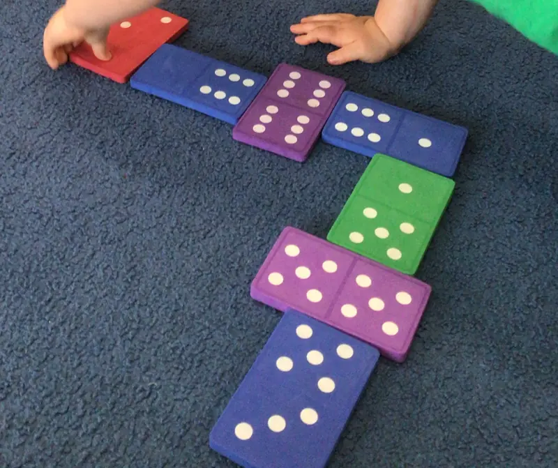
Giant dominoes. 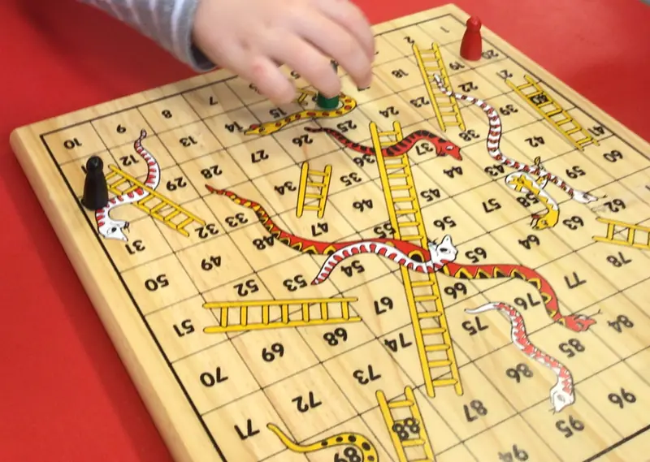
Snakes and ladders. 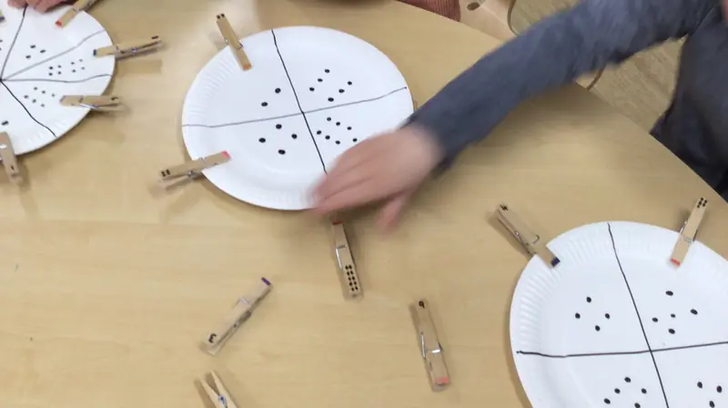
Counting with pegs and plates.


Food

The snack table. 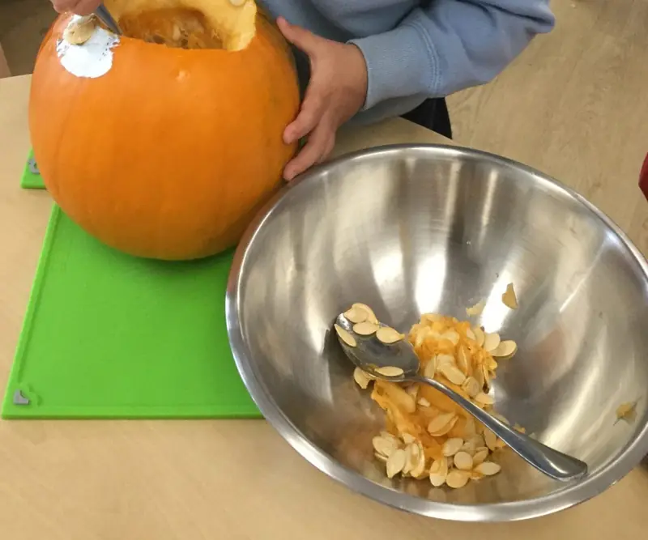
Carving a pumpkin.

Art
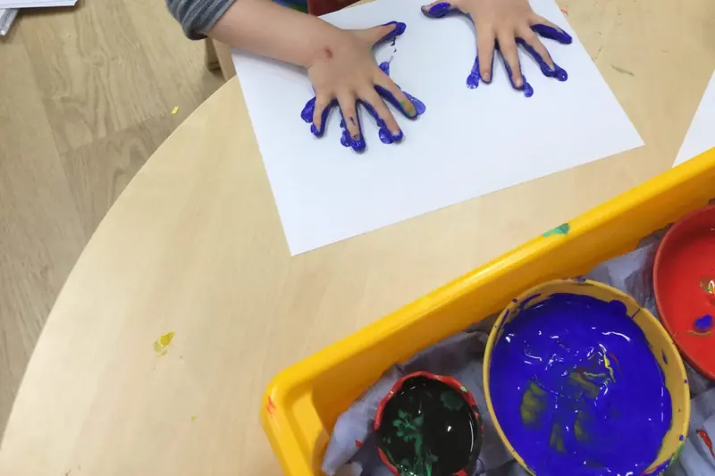
Painting with hands. 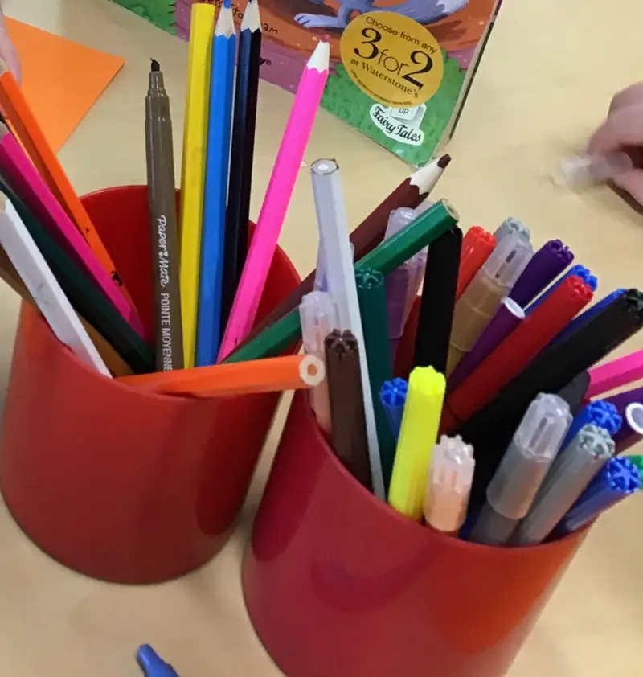
Pens and pencils, ready to go.


The way in: a short tour
Read the tour as text
The garden after snow. The old boat in the garden. The mud kitchen. Watering the raised beds. A rainwater catcher the children made. Baskets and shelves in the playroom. The feelings check-in wall. Programming the Bee-Bot. Giant dominoes. The snack table. Carving a pumpkin. Painting with hands.
About these photos
To protect the children's privacy, we only show hands, toys, food and empty spaces. Come and visit to see the nursery in full swing.
Start here
Come for a look round. Phone or email us to book a visit and meet the team.